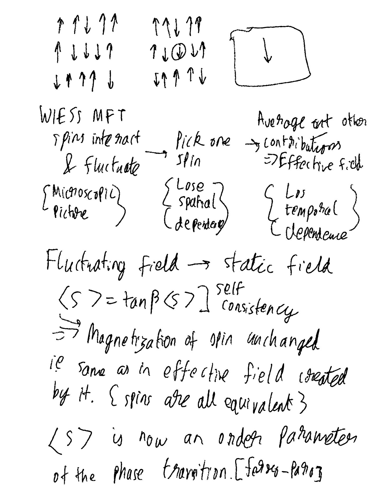

Matrix product states for real materials¶
University of Munich
In this talk, I will present recent advances on how to combine MPS-based and similar algorithms to provide impurity solvers for dynamical mean-field theory (DMFT) in combination with density functional theory. Several physical applications, in particular to strongly correlated materials with Hund’s coupling and spin-orbit coupling (transition metal and rare earth oxides) will be presented, showing how this method can solve physical questions that are not easily accessible to competing methods.
Notes¶
Note
Images cannot be embeded as only a video was provided. Timestamps are indicated.
The main problem with the Hamiltonian is the electron electron interactions. Where the system cannot be framed in terms of a delocalized interaction (e.g. where the valence electrons are bound to sites) then the many body problem needs to be solved. This is the realm of strongly correlated systems where model Hamiltonians are used to study such interactions.
Click to expand slide scribble
Strong correlations matter, and their study in every dimension is important:
0 dimensional systems related to magnetic systems, impurity physics, and quantum dots
1 dimensional systems model spin chains and ladders, along with the Luttinger liquid
2 dimensional systems are relevant for modeling frustrated magnets and high-T_C superconductors
3 dimensional models have the capacity to study realistic systems, and can describe transition metals and rare earth compounds
Focus area for talk
Dynamical mean field theory is the main bridging method.
Attention
Main results are derived in [lindenImaginarytimeMatrixProduct2020] with applications described in [wolfImaginaryTimeMatrixProduct2015brambergerBaOsOHundMetal2021karpMathrmSrMathrmMoOMathrmSr2020].
Essentially, the system is simplified in multiple stages.
Click to expand slide scribble

Some transitions have no order parameter, atleast, not a symmetry breaking simple order parameter.
Click to expand slide scribble
For the Mott Hubbard transition there is no symmetry breaking, and the transition is due to energetic blocking
DMFT¶
The dynamical mean field theory aims to recreate the temporal dependence by certain key aspects:
interacting model \(\to\) interacting impurity in a non-interacting effictive bath
impurity dynamically exchanges electrons with bath
dynamical self-consistency implies that the local lattice GF/SE is the same as the impurity GF/SE
This is exact in the limit of infinite coordination number or dimension.
It can be made more realistic by virtue of:
Having more bands
Using cluster methods
Combinations with DFT
The method is originally described in [georgesHubbardModelInfinite1992] with more details in [kotliarElectronicStructureCalculations2006georgesDynamicalMeanfieldTheory1996].
Green’s function is required. This is done with an impurity solver like:
Hirsch-Fye MC (Action) [Obsolete]
continuous time QMC (Action)
analytic continuation
sign problem?
exact diagnolization (Hamiltonian)
analytic continuation
computational cost (exponential)
numerical renormalization group (Hamiltonian)
logarithmic discretization
computational cost (exponential)
MPS Formulation¶
Good for 1D
No sign issues (unlike CT-QMC)
Real frequency axis
No logarihmic discretization of the spectral range
Computational tractable
Works best at zero temperature (unlike CT-QMC)
On the imaginary axis:
smaller bath sizes
no entanglement growth in time evolution
more orbitals
however, needs analytic continuation of spectral function
worked upto 6 orbitals (in [wolfImaginaryTimeMatrixProduct2015])
Case study¶
Properties of strontium ruthenate are described in [mackenzieSuperconductivityMathrmSrMathrmRuO2003]. Overview:
2D, 3 relevant d-orbitals
Strongly correlated
Fermi liquid (Hund’s metal)
Unocnventional superconductor (p-wave)
Appreciable spin-orbit coupling (SOC)
Good system for integrating MPS-DMFT with DFT band structure, since without SOC CTQMC-DMFT is very accurate and can be used for benchmarks, with SOC there is a sign problem.
Click to expand slide scribble
Key questions were:
does SOC affect the Fermi liquid behaviour
interplay of Coulomb interaction and SOC
calculation of new topology
CTQMC has a sign problem at low temp.
Existing literature [tamaiHighResolutionPhotoemissionMathrmSr2019zhangFermiSurfaceMathrmSr2016kimSpinOrbitCouplingElectronic2018] suggested that Fermi liquid was a little affected with a strong SOC enhancement via a fitting process.
Effective steps for imaginary time DMFT-MPS [time=18m10s]:
From Green’s function and self energy
Derive an effective Hamiltonian where the impurity is
Time evolution and then feed into the SCF loop
The tensor related steps are the calculation of the ground state, excitation, and then time evolution. Without spin orbit coupling there are no interactions and the calculation is fairly straightforward.
Click to expand slide scribble
Issues¶
However, the mapping of a bath to a 1D MPS is non-trivial and was disputed [wolfSolvingNonequilibriumDynamical2014].
Click to expand slide scribble
The star geometry is an order of magnitude more efficient. The star geometry has a growing potential, and the sites have a full/empty product state, and the impurity hopping causes some entanglement but is offset by the fact that the hoppings are energetically unfavorable. With the chain model, the potentials are constant, hopping is therefore cheap (intrabath) and effectively there is much more entanglement.
Time Scaling¶
In order to capture the behavior of the anticommutator, a higher resolution is needed for lower times.
Click to expand slide scribble
[time=23:16 for benchmarks]
Linear predictions for the time work as well, empirically [barthelSpectralFunctionsOnedimensional2009].
[time=24:00 for benchmarks]
Spin Orbit coupling¶
The bath fitting becomes much more difficult, due to interactions. From two self energies to 21 self energies. However, the diagonal self-energies are essentially unchanged, that is when the impurity jumps in and out of the bath, does not change the Fermi liquid behavior, as expected.
The off diagonals show agreement with ARPES, angular resolved photo electron spectroscopy signals. This now allows for a fit free comparison for real systems.
[time=25:00 for benchmarks]
Conclusions¶
MPS for realistic non-1D problems
Advanced complementary time evolution
Krylov+2TDVP (time stepper combinations)
MPS-DMFT allows a first principles treatment of SOC, reproduces CTQMC, is cheaper
References¶
- Gra10
Lars Grasedyck. Hierarchical Singular Value Decomposition of Tensors. SIAM Journal on Matrix Analysis and Applications, 31(4):2029–2054, 01 2010. URL: https://epubs.siam.org/doi/abs/10.1137/090764189 (visited on 2021-05-22), doi:10.1137/090764189.
- GKLobbertW20
Lars Grasedyck, Maren Klever, Christian Löbbert, and Tim A. Werthmann. A parameter-dependent smoother for the multigrid method. 08 2020. URL: http://arxiv.org/abs/2008.00927 (visited on 2021-05-22), arXiv:2008.00927.
- GLobbert18
Lars Grasedyck and Christian Löbbert. Distributed hierarchical SVD in the Hierarchical Tucker format. Numerical Linear Algebra with Applications, 25(6):e2174, 2018. URL: https://onlinelibrary.wiley.com/doi/abs/10.1002/nla.2174 (visited on 2021-05-22), doi:10.1002/nla.2174.